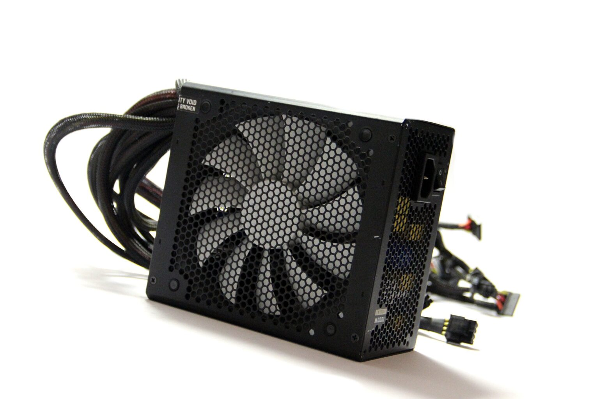
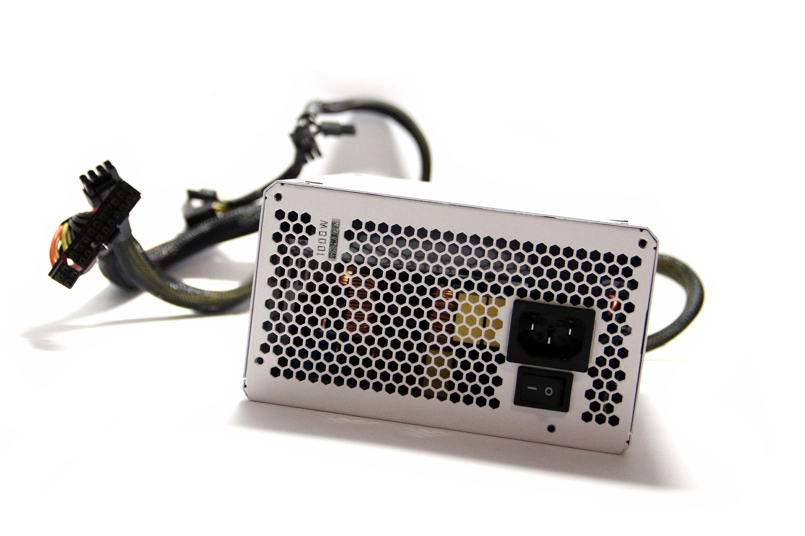
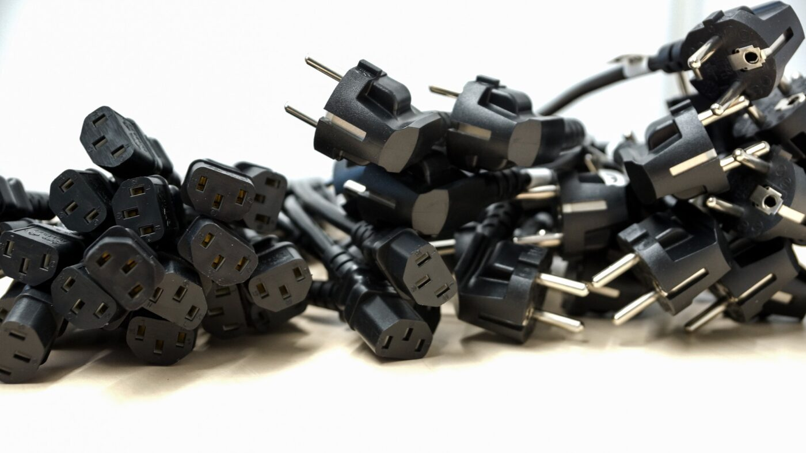

Ce înseamnă mai exact o sursă de calculator cu format „ATX”? Acest acronim provine de la standardul internațional **ATX (Advanced Technology eXtended)**. Pe scurt, el definește un set clar de norme industriale privind dimensiunile și formele geometrice care permit ca sursele de alimentare destinate computerelor desktop să fie perfect interschimbabile între ele.
Acest ghid tehnic despre alegerea sursei potrivite pentru calculator a fost conceput special pentru a te ajuta în luarea deciziilor corecte. Indiferent că ești în căutarea unei surse de alimentare pentru o configurație complet nouă sau că trebuie să înlocuiești o piesă defectă dintr-un sistem existent, informațiile următoare îți vor simplifica întregul proces.
Dimensionarea fizică și alegerea form factor-ului prin configurație sau comparație
Prima întrebare esențială pe care trebuie să ți-o pui este: „Are sursa mea un format compatibil cu standardul ATX?”. Dacă vrei să cumperi o sursă ATX standard, trebuie să te asiguri că dimensiunile geometrice se potrivesc, deoarece o unitate dintr-un format diferit (cum este micro ATX) nu se va potrivi în decupajele carcasei desktop-ului.
Cea mai sigură metodă pe care o poți folosi în selectarea unei noi surse este compararea directă a dimensiunilor fizice. Pentru a te asigura că noua unitate poate fi găzduită fără probleme de șasiul carcasei utilizate, înălțimea, lățimea și adâncimea sursei noi trebuie comparate cu cele ale celei vechi. Dacă înlocuiești o sursă de alimentare existentă, măsoară-i dimensiunile brute înainte de a achiziționa un model nou.
Dating o situație în care sursa ta actuală este considerabil mai mică decât dimensiunile tipice ale surselor de alimentare ATX, există o probabilitate mare să deții o sursă micro ATX. Dacă suspectezi acest lucru, poți compara dimensiunile ei direct cu specificațiile fizice ale unei surse micro ATX dedicate.

Foto: Structura internă a unei surse ATX profesionale, responsabilă cu transformarea curentului alternativ în curent continuu stabil.
După ce ai validat dimensiunile geometrice bazate pe dimensiunea fizică, este momentul să analizezi topologia conectorilor de care ai nevoie de la sursa de alimentare. Diferitele surse de pe piață vin echipate cu linii și cabluri diferite, scopul fiind alegerea unei unități care acoperă integral cerințele și nevoile electrice ale tuturor componentelor montate în computer.
Nu este nicio problemă dacă după finalizarea asamblării îți rămân conectori neutilizați; îi poți lăsa pur și simplu liberi și neconectați. Majoritatea calculatoarelor includ linii cu conectori de rezervă (backup).

Foto: Aspectul exterior al unei surse PC cu fante tip fagure pentru disiparea optimă a căldurii generate de transformatoare.
Ghidul conectorilor standard pe care trebuie să îi cunoști
- Conectorul ATX de 20 de pini: Este conectorul ATX principal care se introduce direct în placa de bază. Dacă placa ta de bază deține un slot configurat pentru mufa de 20 de pini prezentată în schițele tehnice, poți fi aproape 100% sigur că sistemul necesită o sursă ATX. Asigură-te că acorzi o atenție sporită numărului de pini, deoarece pe anumite computere acest conector conține 24 de pini în loc de 20.
- Conectorul ATX de 24 de pini: Unele plăci de bază moderne necesită un conector de 24 de pini. Toate sursele moderne includ cei 4 pini suplimentari sub formă detașabilă, permițând alimentarea atât a plăcilor de bază noi, cât și a celor din generațiile anterioare.
- Conectorul IDE de 4 pini (Molex): Acesta este conectorul utilizat pentru a alimenta hard disk-urile clasice și unitățile optice DVD. Majoritatea surselor ATX includ 4 astfel de conectori. Dacă configurația ta cere mai mult de 4 mufe, este recomandat să cumperi splittere în formă de „Y” pentru a le suplimenta numărul, achiziția unei surse cu mai mult de 4 conectori nativi fiind adesea mult mai costisitoare decât un simplu adaptor splitter. Astăzi, acești conectori Molex sunt utilizați mai mult pentru alimentarea coolerelor sau a controllerelor RGB.
- Conectorul SATA Power: Unitățile moderne de stocare de tip hard drive, SSD-urile și unitățile optice sunt alimentate folosind exclusiv conectori SATA, aceștia fiind cei mai populari și utilizați în prezent.
Calculul puterii necesare (Wattaj)
Este extrem de important să stabilești din timp de câtă putere electrică vei avea nevoie. Este complet sigur și în regulă să cumperi o sursă de alimentare cu o capacitate mai mare decât cerința totală dictată de consumul maxim al fiecărei componente din calculator. Pe de altă parte, achiziția unei surse a cărei putere este egală sau sub consumul maxim cumulat al tuturor componentelor este un lucru critic care trebuie evitat cu desăvârșire. Sursa este cea care livrează energia vitală operării întregului sistem desktop PC.
Norme de siguranță electrică și protocolul de instalare
O sursă de alimentare are abilitatea de a stoca **încărcături electrice mari în condensatorii săi interni cu valori ridicate de 400V**, chiar și după ce ai deconectat-o complet de la rețea. Este vital să cunoști aceste aspecte în avans pentru a preveni greșelile, accidentările personale sau provocarea de daune colaterale celorlalte componente hardware. Înainte de lucru, setează comutatorul fizic de voltaj în poziția „0” sau Off (dacă sursa ta include un astfel de comutator, unele modele neavând unul propriu).
Primul pas practic constă în deschiderea carcasei PC-ului. Indiferent că deții un format mini-tower, middle-tower sau mini ATX, tipul de șasiu contează deoarece carcasele mini ATX pot avea o modalitate complet diferită de acces. Protocolul standard implică deșurubarea panoului lateral sau frontal.
Alinierea și asigurarea sursei în șasiu
Următoarea etapă în procesul de instalare a unei surse desktop este alinierea corectă a acesteia cu șasiul carcasei și asigurarea ei fermă. Sursa de alimentare prezintă patru orificii de montare care se suprapun perfect peste cele patru găuri de fixare de pe spatele carcasei computerului. Vei observa rapid că sursa este o componentă hardware destul de grea.
Va trebui să introduci cu grijă sursa în computer, să potrivești orificiile de montare cu cele ale carcasei și apoi să folosești o șurubelniță pentru a o fixa strâns cu șuruburile ei mecanice. Unele carcase de calculator sunt prevăzute cu mici praguri sau margini interioare pe care poți sprijini sursa, facilitând asamblarea. Învățarea tehnicilor de instalare a componentelor necesită multă răbdare, dar și o anumită îndemânare din partea tehnicianului.
Conectarea cablurilor la placa de bază și periferice
Ulterior, vei realiza conexiunile electrice dintre sursă și placa de bază, cele mai comune fiind cele de tip ATX cu cabluri standard de 24 de pini. Dacă instalezi un computer dintr-o generație mai nouă, va trebui să conectezi suplimentar un conector de 12V de 4 sau 8 pini la placa de bază, utilizat exclusiv pentru a alimenta procesorul în mod separat. Sursele moderne vin echipate cu pini detașabili de tip 4+4 (4-by-4) pentru a asigura compatibilitatea deplină cu toate tipurile de plăci de bază, fie ele modele mai vechi, noi sau echipate cu procesoare foarte puternice.

Foto: Varietatea de conectori (PCIe, ATX, SATA) ce ies dintr-o sursă non-modulară, pregătiți pentru conectare.
Verificarea finală și prima pornire a sistemului
Ești aproape gata. Re-verifică vizual și fizic toate conexiunile stabilite între sursa de alimentare și placa de bază (mufele de 20-24 pini și cele de 4-8 pini), precum și legăturile către restul componentelor (SATA, Molex și liniile PCI-Express). Asigură-te că toate aceste conexiuni sunt sigure, ferme și introduse complet în sloturi.
Dacă totul este în regulă, ești pregătit să conectezi cablul de alimentare extern la priză și să pornești sistemul. Închide carcasa computerului prin reașezarea panoului și strângerea șuruburilor. Conectează mai întâi cablul de alimentare extern în mufa tată a sursei, atașează apoi cablul de curent alternativ (AC) la priza de perete sau la prelungitor și comută butonul fizic în poziția „1” (On). Pornește calculatorul.
Dacă ai urmat acești pași în ordine, vei auzi imediat zgomotul lin al ventilatoarelor care pornesc, ceea ce demonstrează că sursa livrează corect puterea electrică necesară computerului pentru a inițializa secvența de boot. Ulterior, verifică funcționarea corectă în sistemul de operare a unităților secundare de stocare de tip SSD, HDD sau a unităților optice DVD-RW.
Acum ai învățat cum se instalează corect o sursă de alimentare PC. Este o realizare tehnică de care poți fi pe deplin mândru! Deși asamblarea sau înlocuirea unei surse desktop poate reprezenta o provocare reală pentru începători, suntem convinși că acest ghid a făcut întregul proces extrem de clar și simplu de parcurs.
🔧 Ai nevoie de un upgrade de sursă sau calculatorul tău s-a oprit brusc și refuză să mai pornească? Te așteptăm la service-ul nostru independent din București, Sector 6, Strada Aleșd nr. 10 (DORADO SYSTEMS®). Executăm măsurători electrice de laborator, diagnosticarea inițială fiind complet gratuită.
Interconectarea cu rețeaua noastră de ghiduri hardware
Stabilitatea tensiunilor livrate de sursa ATX direct pe circuitele VRM este crucială pentru funcționarea magistralelor de date; află cum sunt distribuite aceste linii în Ghidul de Arhitectură al Plăcii de Bază PC. Modul în care consumul de energie crește odată cu frecvențele de lucru ale memoriei este explicat în Ghidul de Optimizare al Memoriei RAM.
Dacă instalezi o sursă nouă într-o configurație custom completă, parcurge instrucțiunile de compatibilitate din Ghidul de Asamblare PC Gaming Custom, iar pentru a înțelege cum influențează calitatea curentului stabilitatea controllerului flash, citește Ghidul Tehnic al Unităților SSD. În plus, vezi cum controlăm temperaturile componentelor alimentate de sursă în Ghidul Aplicării Corecte a Pastei Termice.
Calculatorul tău se oprește singur în jocuri sau scoate sunete ciudate (coil whine)?
O sursă îmbătrânită sau de calitate slabă pune în pericol viața plăcii video și a procesorului. Protejează-ți investiția printr-o verificare gratuită la sediu.
Solicită Verificare Gratuită Sursă PC